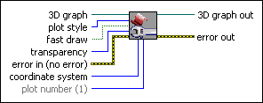

Basic Properties VI
Owning Palette: 3D Graph Properties VIs
Requires: Base Development System (Windows)
Adjusts various properties of the plot, including the transparency, plot style, and coordinate system.

 Add to the block diagram Add to the block diagram |
 Find on the palette Find on the palette |